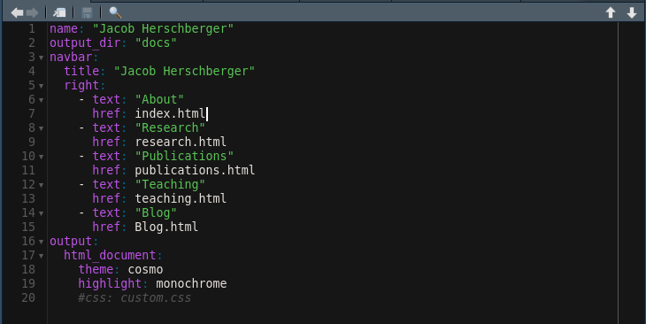
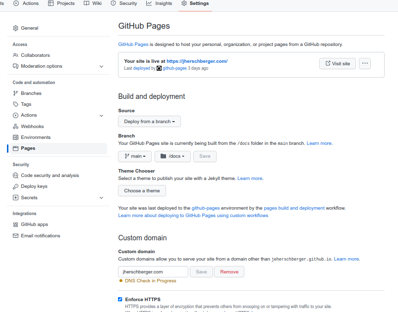
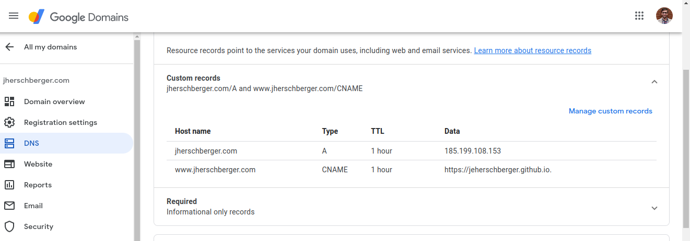

Building a website is pretty easy with Rmarkdown, github pages, and a domain purchased from Google. Rmarkdown provides easy formatting compared to a website that is written in html. Github-pages provides free hosting services and a free domain. However, if you want a more professional domain, you will need to purchase one on Google or any other domain registering site.
For my website template, I downloaded the files from Rstudio cloud that were obtained after clicking on this link. I also created the final template that can be used to start the website. These files can also be obtained here on one of my github repositories. Basically I just copied the files that were in the “*-website” folder on Rstudio cloud and modified the “_site.yml” file. I changed the website output folder to be in the “docs” folder. This is where github-pages will look for the html files. Additionally I modified the last lines of the “_site.yml” file to include a none default theme and highlight. You will only need to modify the “_site.yml” file to change the navigation menu and the “.Rmd” files to change each webpage.

Any “.Rmd” file that is in the main root folder of the repository will output an html file and you need to reference that in the “_site.yml” file. More website building instructions can be found here and Rmarkdown basics can be found here. Also feel free to checkout my website code here
Once you cloned the website template from my github repository, you can host your website on github-pages. To do that you will need to go in the settings tab of the cloned repository and apply the settings shown below, with your own domain of course :).

Below are the settings I used to register github on the purchased Google domain. Again, you will need to use your own domain name and Github username.

Once you have all this set up, you will need to link your github repository to rstudio. Then you can modify the “_site.yml” and “.Rmd” files to your liking and use Rmarkdown in r studio to build your website. Just make sure you revert the “CNAME” file every time you build your website.